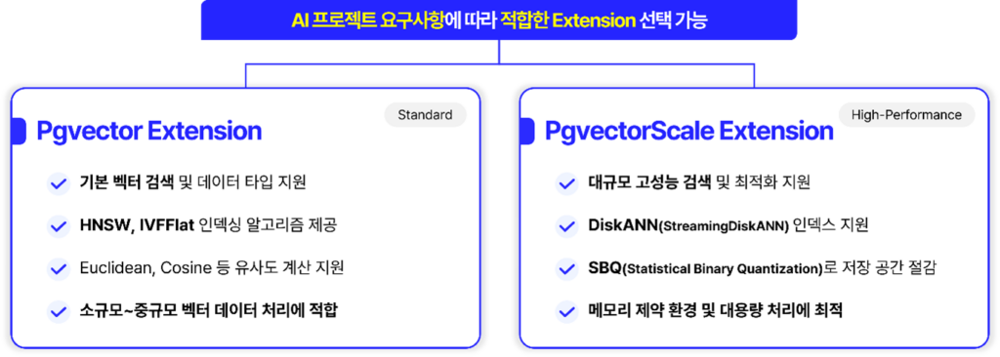
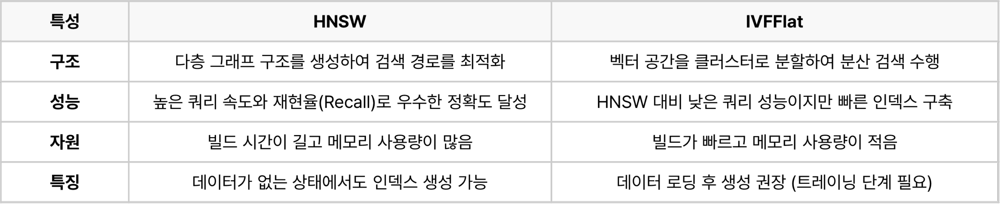
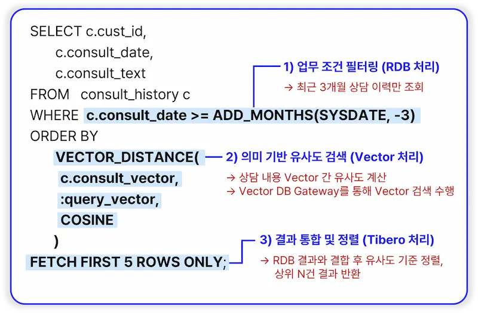
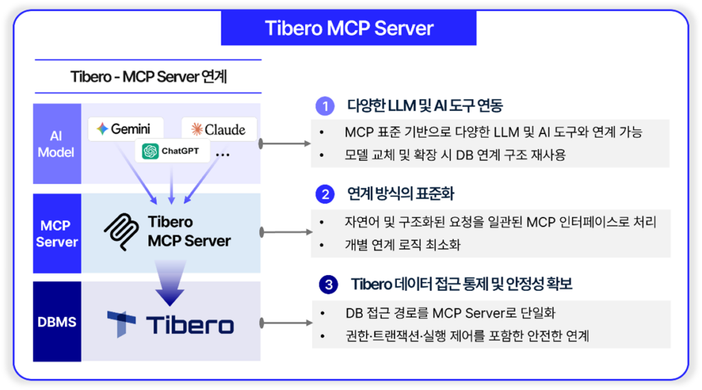

실제로 현재 비즈니스 현장에서는 다음과 같은 고민이 이어지고 있습니다.
- 비정형 데이터 활용: 생성형 AI와 대규모 언어 모델(LLM)이 대중화되면서, 기존 구조화된 데이터뿐 아니라 이미지, 문서, 텍스트 같은 비정형 데이터까지 한 번에 활용해야 하는 상황
- 기술적 통합: 기존 시스템의 안정성을 유지하며 Vector DB 기능을 어떻게 내재화할 것인가에 대한 고민
- DBMS의 역할 강화: AI 모델 학습부터 배포, 운영까지의 전체 파이프라인을 DBMS 차원에서 효율적으로 지원할 수 있는 방법
그 해답이 바로 AI 시대에 최적화된 DBMS입니다.
티맥스티베로는 이러한 시대적 요구에 부응하기 위해 오픈소스 DBMS와 상용 DBMS를 통 AI 연계 중심의 DBMS 전략을 제시합니다.
OpenSQL: 오픈 AI 생태계와 결합하는 벡터 DB
OpenSQL은 PostgreSQL 기반의 오픈소스 DBMS 플랫폼으로, AI 프로젝트의 요구사항에 따라 적합한 Vector DB Extension을 선택하여 활용할 수 있도록 설계되었습니다.
📌관련 글: 기술지원까지 완벽한 오픈소스 DBMS, OpenSQL
기존의 RDBMS(관계형 데이터베이스) 기능을 유지하면서도, AI 기반 벡터 검색을 위한 다양한 확장 기능을 제공함으로써, 별도의 벡터 DB 솔루션을 도입할 필요 없이 기존 DB 환경 내에서 AI 기능을 통합할 수 있습니다.

① Pgvector: 표준 벡터 검색의 견고한 기반
Pgvector Extension은 OpenSQL에서 가장 널리 활용되는 벡터 DB 솔루션입니다. 머신러닝 모델의 특성에 따라 6가지의 서로 다른 거리 계산 방식을 지원함으로써, 다양한 AI 시나리오에 최적화된 검색을 가능하게 합니다.
Pgvector가 제공하는 거리 계산 방식은 다음과 같습니다.
- L2 distance(<->): 유클리드 거리로 벡터 간 직선 거리를 계산하여 값 차이를 직관적으로 측정합니다.
- Cosine distance(<=>): 벡터 간 방향을 기준으로 유사도를 판단하며, 텍스트 임베딩 분석에 가장 많이 사용됩니다.
- Inner product(<#>): 내적을 계산하여 두 벡터의 관련성 점수를 산출합니다.
- L1(<+>): 좌표축을 따라 거리를 계산하는 맨해튼 거리입니다.
- Hamming(<~>)/Jaccard(<%>): 이진 데이터 비교 방식으로 일치/불일치 기반의 유사도를 계산합니다.
이와 같이 Pgvector는 다양한 거리 계산 방식을 지원함으로써, 자신의 모델 특성에 맞는 최적의 검색 방식을 선택할 수 있습니다.
특히 성능 최적화를 위한 ANN(Approximate Nearest Neighbor) 인덱스 알고리즘도 지원합니다. Pgvector가 제공하는 두 가지의 인덱스 알고리즘 ‘HNSW(Hierarchical Navigable Small World)’와 ‘IVFFlat(Inverted File with Flat Compression)‘의 특성은 다음과 같습니다.

- HNSW는 쿼리 성능과 정확도가 우수하기 때문에 실시간 검색 성능이 중요한 환경에 적합합니다.
- IVFFlat는 빠른 구축과 낮은 메모리 사용으로 인한 효율성이 장점입니다.
실제로 소규모부터 중규모 규모의 벡터 데이터 검색이 필요한 경우, Pgvector만으로도 충분한 성능을 확보할 수 있습니다. 특히 기존 SQL 쿼리와 벡터 검색을 함께 수행해야 하는 하이브리드 검색 시나리오에서 매우 효과적입니다.
② PgvectorScale: 대규모 데이터 처리를 위한 확장 솔루션
데이터 규모가 기하급수적으로 증가하면서 새로운 도전이 등장합니다. 수억 건 이상의 벡터 데이터를 다루는 대규모 환경에서는 메모리 효율성, 검색 속도, 그리고 스토리지 활용 간의 균형이 매우 중요해집니다.
PgvectorScale은 바로 이러한 대규모 환경을 위해 설계된 Pgvector의 확장 솔루션입니다. Pgvector의 모든 기능을 계승하면서, 대규모 데이터 처리에 최적화된 고성능 기능들을 추가로 제공합니다.
가장 주목할 기능은 StreamingDiskANN입니다. 이것은 Microsoft Research의 DiskANN 알고리즘을 기반으로 하여, SSD 중심의 대규모 벡터 인덱싱을 실현합니다. 기존 HNSW 같은 메모리 중심 인덱싱과 달리, StreamingDiskANN은 메모리와 SSD를 효율적으로 조합하여 전체 데이터를 메모리에 올릴 필요 없이 대규모 데이터셋을 처리할 수 있습니다. 이는 스트리밍 방식의 인덱스 빌드를 지원함으로써 수억 건의 벡터 데이터를 다루는 환경에서도 메모리 사용량을 안정적으로 제어할 수 있다는 의미입니다.
또한 PgvectorScale은 SBQ(Statistical Binary Quantization)로 독자적인 벡터 압축 기술을 제공합니다. 이는 벡터 분포를 학습한 통계 기반 압축 기법으로, 기존 Binary Quantization 대비 정확도(Recall) 손실을 최소화하면서 인덱스 크기를 획기적으로 감소시킵니다. 결과적으로 SSD 사용량이 절감되어 대규모 환경에서 획기적으로 비용 효율성을 높일 수 있습니다.
이 기능들이 결합되면, PgvectorScale은 기존의 메모리 중심(HNSW) 방식과 달리 SSD에 최적화된 구조를 통해 엔터프라이즈급 대규모 벡터 검색이 가능해집니다.
OpenSQL의 세 가지 핵심 가치
AI 시대 DBMS로 OpenSQL이 가장 적합한 이유는 무엇일까요?
① AI 생태계에 최적화된 아키텍처
OpenSQL은 PostgreSQL 기반이기 때문에 LangChain, LlamaIndex, HuggingFace 같은 글로벌 오픈 AI 스택과 자연스럽게 결합됩니다. 이는 단순한 기술 호환성을 넘어, 기업이 빠르게 변화하는 오픈 AI 생태계 속에서 유연하게 대응할 수 있다는 의미입니다. 새로운 오픈소스 AI 모델이나 라이브러리가 등장했을 때, 벡터 검색 인프라를 크게 수정할 필요 없이 새로운 기술을 신속하게 적용할 수 있습니다.
② 벤더 종속을 최소화하는 유연한 확장 구조
OpenSQL에서 사용되는 Pgvector와 PgvectorScale은 모두 검증된 오픈소스 솔루션입니다. 이를 통해 기업은 특정 벤더 중심 기술에 의존하지 않고, 표준 기반 아키텍처로 얼마든지 확장 가능할 수 있습니다. 또한 새로운 벡터 인덱싱 방식을 시도하거나, 커뮤니티에서 지원하는 새로운 Extension을 도입하고 싶다면 자유롭게 선택할 수 있습니다. 이는 10년, 20년 뒤 AI 기술이 어떻게 변화할지 모르는 상황에서 매우 중요한 가치입니다.
③ 오픈소스 기반의 상용 수준 운영 체계
많은 기업들이 오픈소스를 도입하면서 겪는 가장 큰 고민은 “오픈소스는 무료지만 운영은 어렵다”는 것입니다. OpenSQL은 상용 수준의 기술지원과 운영 안정성을 제공함으로써 오픈소스의 진정한 가치를 실현 가능하게 합니다. 기업은 오픈소스의 비용 효율성을 얻으면서도, 장애 상황에서 신속한 지원을 받을 수 있는 운영 안정성을 동시에 확보할 수 있습니다.
이러한 특성들이 결합되면 비용 효율적이면서도 기술적으로 미래 지향적인 AI 데이터 인프라가 완성됩니다.
Next Step: AI 최적화 DBMS로의 진화
오픈소스가 유연한 확장성을 보여준다면, 향후 강화될 상용 DBMS의 핵심은 미션 크리티컬 환경에서의 안정적인 AI 활용에 있습니다. 티맥스티베로가 지향하는 차세대 상용 DBMS는 다음과 같은 방향으로 진화하고 있습니다.
① 안정성
티맥스티베로는 AI 시대의 DBMS가 AI 기능을 확장하더라도, 기존의 트랜잭션 처리 특성과 성능을 그대로 유지하는 것이 필수적이라고 보고 있습니다. 차세대 Tibero는 단순히 기능을 추가하는 것이 아닌, 미션 크리티컬 시스템에서 요구되는 높은 트랜잭션 안정성과 데이터 무결성을 지켜내면서 동시에 AI를 활용할 수 있도록 변화할 계획입니다.
② 거버넌스
차세대 Tibero는 AI 요청을 SQL 기반으로 처리하는 구조를 지향하고 있습니다. 권한 관리, 접근 제어, 감사 정책과 같은 보안 체계를 DB 차원에서 일관되게 적용할 수 있기 때문입니다. 또한 별도의 AI 서비스가 아닌 DBMS 내부에서 직접 처리하는 방식을 통해, AI 활용에 따른 보안 및 운영 리스크를 효과적으로 줄일 수 있습니다. 특히 금융, 공공, 의료와 같은 규제 산업에서는 이러한 통합 거버넌스 체계가 더욱 중요한 의미를 갖습니다.
③ 확장성
향후 Tibero는 Vector 검색과 Hybrid Search 기능을 DB 내에서 자연스럽게 확장할 수 있도록 진화해 나갈 예정입니다. AI 도입으로 벡터 검색 수요가 증가하더라도, 별도의 벡터 DB를 추가로 구축할 필요 없이 Tibero 안에서 유연하게 대응할 수 있는 구조를 지향합니다. 또한 시간이 지나 AI 요구사항이 변화하고 새로운 기술이 등장하더라도, 이에 유연하게 대응할 수 있는 아키텍처를 갖출 계획입니다.
④ 실용성
티맥스티베로가 그리는 미래의 가장 현실적인 특징은 PoC 중심이 아닌, 실제 운영 환경 적용을 전제로 설계된다는 점입니다. 많은 AI 솔루션이 PoC 단계에서는 뛰어난 성능을 보이지만, 실제 업무 시스템에 적용하려면 추가적인 개발과 통합 작업이 필요한 경우가 많습니다. 반면 차세대 Tibero는 업무 데이터와 AI 검색 결과를 자연스럽게 결합하고, 운영 환경에서 발생하는 다양한 시나리오까지 고려하고 있습니다. 즉, 기업이 AI를 ‘실제로 활용’할 수 있는 수준의 DBMS를 목표로 합니다.
그리고 이 모든 가치가 집대성되는 지점이 바로 Hybrid Search입니다.
Hybrid Search: 업무 조건과 AI 검색의 자연스러운 결합
실제 업무 시나리오에서는 벡터 검색만으로는 부족한 경우가 대부분입니다. 단순히 “현재 문의와 의미가 유사한 상담 사례”를 찾는 것이 아니라, “최근 3개월 내에 등록된 상담 중에서 현재 문의와 의미가 유사한 사례”를 찾아야 합니다. 또는 특정 고객군, 특정 상품 카테고리, 특정 기간 등 다양한 업무 조건이 함께 고려되어야 합니다.
기존의 벡터 DB만으로는 이러한 요구사항을 처리하기 위해 별도의 전처리 단계나 복잡한 애플리케이션 로직이 필요했습니다. 벡터 검색 결과를 RDB에서 다시 필터링하고, 다시 정렬하고, 여러 시스템 간 데이터를 조합하는 과정을 거쳐야 했습니다. 하지만 티맥스티베로의 Hybrid Search는 이 모든 과정을 하나의 SQL 쿼리로 처리하는 것을 목표로 합니다.

이 단순한 SQL 한 줄 속에는 세 가지 처리 과정이 포함되어 있습니다.
① 업무 조건 필터링(RDB 처리)
WHERE 절의 c.consult_date >= ADD_MONTHS(SYSDATE, -3) 조건은 순수한 RDB 처리로, 최근 3개월 상담 이력만을 대상 데이터로 선정합니다. 이는 기업의 실제 업무 규칙을 반영한 데이터 범위 제한입니다.
② 의미 기반 유사도 검색(Vector 처리)
ORDER BY 절의 VECTOR_DISTANCE() 함수는 벡터 DB 게이트웨이를 통해 벡터 검색을 수행합니다. 상담 내용의 벡터 간 유사도를 계산하여, 사용자 질의와 가장 유사한 상담 사례부터 순서대로 정렬합니다.
③ 결과 통합 및 정렬(Tibero 처리)
RDB 필터링 결과와 벡터 검색 결과가 Tibero 엔진 차원에서 자연스럽게 통합되며, 유사도 기준으로 최종 정렬되어 상위 N건의 결과가 반환됩니다.
이처럼 벡터 검색과 관계형 데이터 처리를 동일한 SQL 인터페이스에서 통합함으로써, 데이터 일관성을 보장하고, 응답 성능을 최적화할 수 있습니다. 이것이 바로 실제 운영 시스템을 위한 설계의 핵심입니다. 기존 SQL 역량을 그대로 활용함으로써 개발자는 새로운 쿼리 언어를 배우지 않아도 되며, 운영 담당자는 통합된 환경에서 일관되게 관리할 수 있습니다.
Tibero MCP Server: 오픈 표준 기반 AI 연계
티맥스티베로의 AI 활용은 데이터베이스 내부에만 머물지 않습니다. Tibero MCP Server를 통해 다양한 LLM 및 AI 도구와 Tibero를 편리하게 연동할 수 있으며, 특히 GitHub에 공개된 오픈소스 프로젝트로 기업이 자유롭게 사용하고 커스터마이징할 수 있습니다.
📌 GitHub – TiberoClient/tibero-mcp: Tibero DBMS 의 MCP 서버 프로젝트

MCP(Model Context Protocol)는 AI 모델이 외부 도구, 데이터, 시스템과 표준화된 방식으로 문맥(Context)을 주고받기 위한 통신 규약입니다. 이를 통해 Tibero MCP Server는 Gemini, Claude, ChatGPT 등 특정 LLM에 제약 없이 Tibero 데이터베이스와 연결할 수 있습니다. 기업이 사용 중인 AI 모델이 무엇이든, 향후 새로운 AI 모델이 등장해도 별도의 기술 수정 없이 MCP 표준을 따르기만 하면 자동으로 호환됩니다.
더욱 중요한 것은 DB 접근 경로를 MCP Server로 단일화함으로써 권한·트랜잭션·실행 제어를 포함한 안전한 연계를 보장한다는 점입니다. 기업의 데이터 보안 정책을 유지하면서 AI 기능을 활용할 수 있으며, 무분별한 외부 AI 도구로부터의 데이터 접근을 방지할 수 있습니다. 이는 기업의 데이터 거버넌스를 유지하면서도 다양한 AI 생태계와 유연하게 연동한다는 의미입니다.
마치며
AI 시대에 DBMS의 역할은 근본적으로 변하고 있습니다.
더 이상 DBMS는 단순히 “데이터를 저장하고 조회하는 도구”가 아닙니다. AI 기술을 비즈니스 수준에서 실제로 운영 가능하게 만드는 기반 인프라로서의 역할이 요구되고 있습니다.
이 시대의 요구사항에 부응하기 위해 티맥스티베로는 두 가지 전략을 제시합니다.
OpenSQL을 통해서는 오픈 AI 생태계와 자연스럽게 결합되는 유연한 아키텍처를 제공합니다. Pgvector와 PgvectorScale 같은 검증된 벡터 DB Extension을 통해 벤더 종속을 최소화하면서도, 상용 수준의 운영 안정성을 확보할 수 있습니다.
차세대 Tibero를 통해서는 미션 크리티컬 환경에서 기존의 안정성을 지키면서 AI를 실제로 활용하는 DBMS를 제시합니다. Hybrid Search로 벡터 검색과 관계형 데이터를 통합하고, Tibero MCP Server로 다양한 AI 모델과 자유롭게 연동하며, 모든 과정에서 데이터 거버넌스를 유지합니다. 개발부터 운영까지 모든 영역에서 AI의 이점을 활용할 수 있도록 설계되었습니다.
기업의 데이터 환경은 더 이상 단순하지 않습니다. 또한 AI 기술도 이제 선택이 아니라 필수입니다.
“안정성을 포기하지 않으면서 AI 시대에 발맞추는 DBMS 전략” 이것이 바로 티맥스티베로가 제시하는 현실적인 해답입니다
작성자: Sales Consulting 본부 / Business Consuliting 실 강필균 컨설턴트
💡 [추가 해설] AI 시대 DBMS 선정을 위한 요약 및 조언
오픈소스 OpenSQL의 Pgvector/PgvectorScale과 상용 Tibero는 서로 대립하는 솔루션이 아니라, 기업의 인프라 성숙도와 요구되는 보안 통제 레벨에 따라 유연하게 선택 및 병행할 수 있는 상호 보완적 도구입니다.
비용 효율성과 최신 오픈 API 호환성이 중요하다면?
LangChain, LlamaIndex 등 최신 LLM 생태계와 신속하게 연동되는 오픈소스 기반 OpenSQL(pgvector)로 신속한 PoC 및 경량 RAG를 구축하는 것이 실용적입니다.
트랜잭션 무결성과 데이터 보안 거버넌스가 최우선인 금융·공공·의료 도메인이라면?
기존 업무 조건(OLTP)과 벡터 검색이 자연스럽게 결합되는 Hybrid Search 기능을 지원하고, 접근 권한 통제가 내재화된 상용 Tibero DBMS로 전환하여 안정적으로 실서비스에 투입하는 전략이 유효합니다.